Маячки: что подсмотреть у Last Day on Earth и что чинить в «Одной Яме»
Разбор 28.10.2026. Повод: по сборке v3 Ямы «как будто хуже стало — маячков нет»; совет — посмотреть, как это сделано у Kefir в Last Day on Earth. П — видно на кадре, в коде или прямо сказано в источнике. ?? — наш вывод или гипотеза.
1. Last Day on Earth: 10 маячков
Живой первой сессии нет: в эмуляторе игра не запускается (собрана только под ARM). Кадры — из официальной справки Kefir и со страницы игры в Google Play. Красные стрелки на кадрах справки нарисовала поддержка Kefir, в игре их нет.
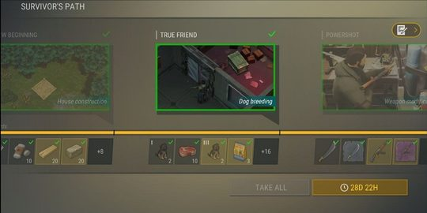
1Путь из глав с картинкой награды П
Каждая глава показывает, что откроется: дом, собака, оружие. Галочки, полоса, награды за шаги.
Игрок видит не «квест 3/7», а то, ради чего стараться.
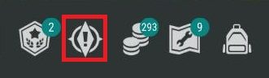
2Цель всегда на экране П
Вход в Путь — одна кнопка с «!» (на кадре). Текущая задача всегда видна слева в HUD — по словам гайда Level Winner, кадра с этой строкой у нас нет.
Ответ на «что дальше?» не надо искать в меню.
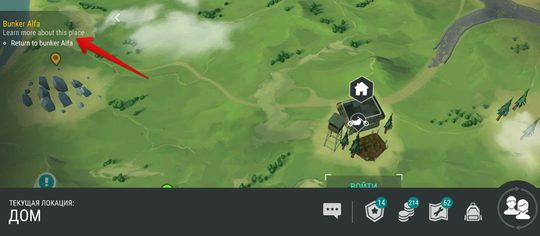
3Тап по цели — показ места П
Текст задачи в углу карты; тап — игра показывает нужное место.
Заблудился — один тап, а не постоянная стрелка.
4Подсвечено одно место из многих П
На карте подсвечены только локации главных задач; у них жёлтое имя, у остальных белое (справка Kefir).
Выбора нет — ошибиться нельзя.
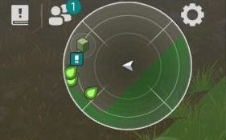
5Радар ведёт на месте П
Справа сверху: «куда идти, что собрать, с кем говорить». Отметка «!» — задача.
Цель за краем экрана видна всегда.
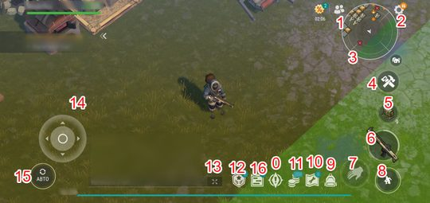
6Бейджи-числа и таймеры в HUD П
Числа на кнопках — сколько ждёт; акция «%» с обратным отсчётом (всё на кадре). «!» над объектом базы — только по вики из выдачи поиска, кадра нет ??.
Сигнал «пора» без текста.
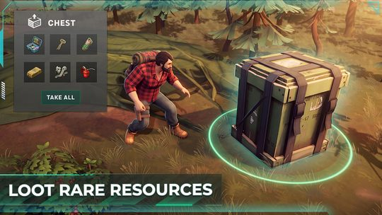
7Кольцо под тем, с чем можно действовать
Цель охоты обведена кольцом — кадр справки П. Ящик с кольцом на этом кадре — рекламный кадр стора, так ли в игре, не проверено ??.
Читается за долю секунды. В Яме кольца уже есть — это наш язык.
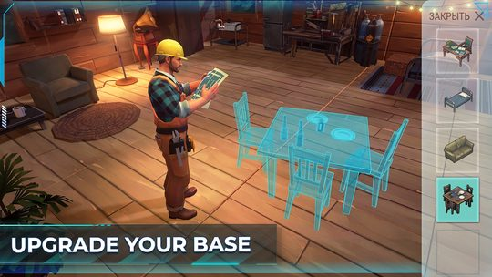
8Призрак будущей постройки ??
Голубой силуэт мебели там, где она встанет. Кадр рекламный — так ли в игре, не проверено.
Будущее показано на месте и в масштабе.
9Срочное: знак + таймер + направление
Знак + таймер: акция «%» с отсчётом в HUD — на кадре (карточка 6) П. Направление: орда на карте — череп, таймер и линия к базе, только по гайдам игроков, кадра нет ??.
Угроза видна заранее, без чтения.
10Отказ ведёт к шагу П
«Нужен транспорт» — тап сразу открывает его крафт.
Тупик превращается в следующую цель. Для нас это ключ к стене.
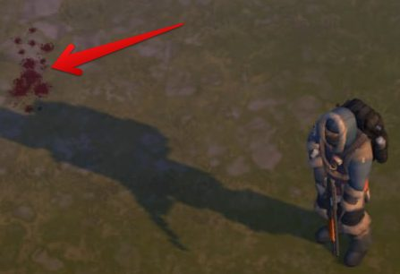
Ещё: подсказки, вписанные в мир П
В ивенте охоты — следы крови, палка-приманка, значок ивентового предмета и кнопка «Дневник», которая «всегда подскажет, что делать дальше».
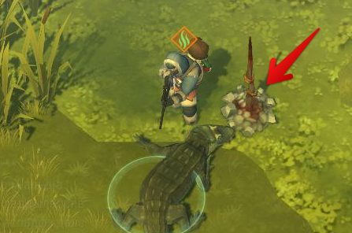
Ещё: ресурс появляется под задачу П
Особые материалы появляются в локациях только после того, как задача выдана, — до этого не отвлекают.
- Одна цель за раз.
- Три слоя: строка цели всегда видна → тап показывает место → на месте ведёт радар или кольцо.
- Цель показывает картинкой, что откроется.
- Отказ ведёт к шагу.
2. «Одна Яма»: почему v3 кажется хуже
Кадры и числа ниже — по одному прогону бота на версию (1 сид), это иллюстрация, а не среднее.
По коду маячков в v3 даже больше: стрелка к Яме у края экрана, строка цели, которая не пустеет, шкала и комбо над Ямой П. Темп по боту почти тот же: первая покупка на 31 с, мотор на 4-й минуте в обеих версиях П. Пропала картинка.
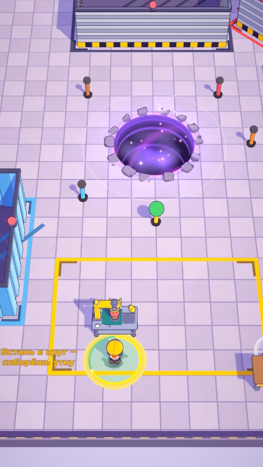
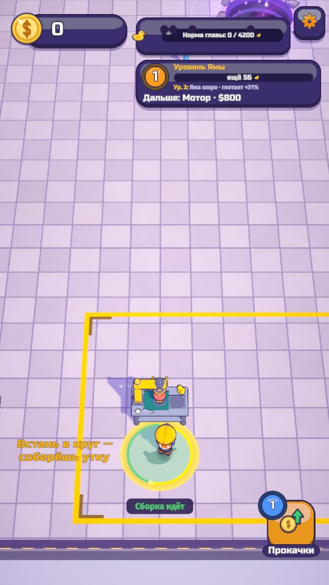
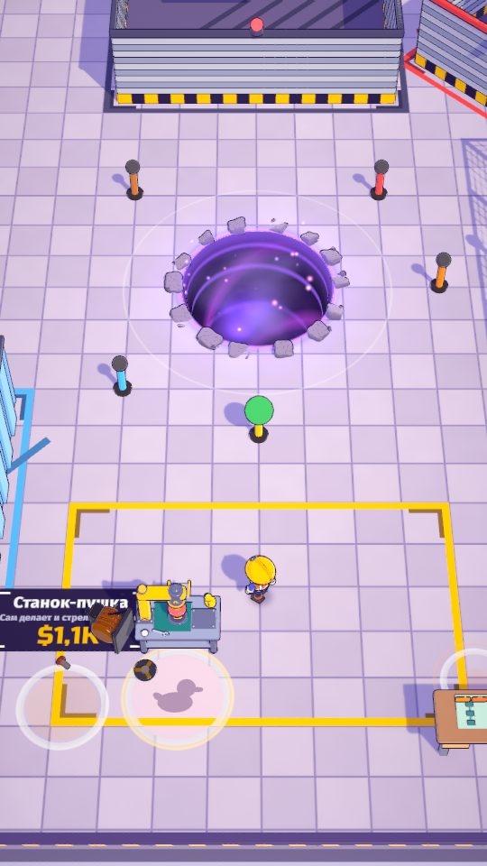
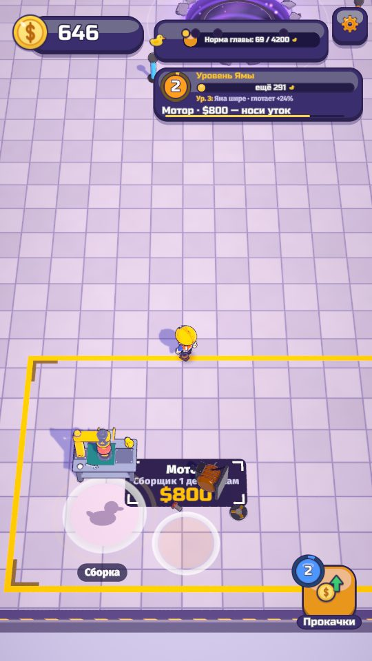
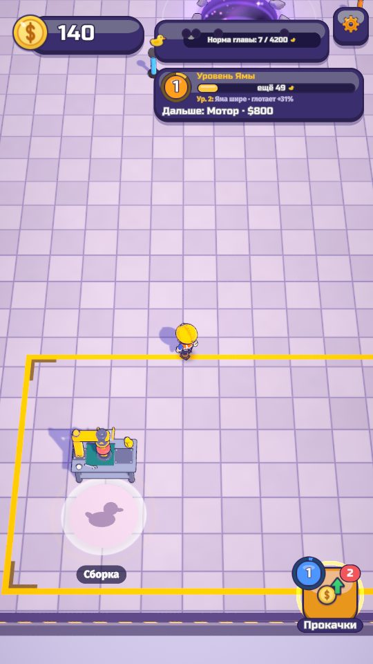
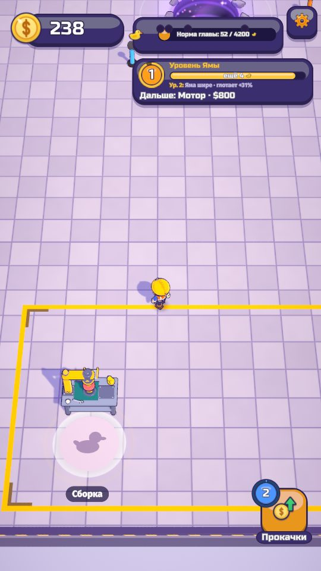
Гипотезы ??:
- Поле ×2, камера на герое и плашки сверху выкинули из кадра главный маячок — саму Яму.
- Подсказки ушли в текст сверху, а на игру смотрят глазами.
- Стрелка к Яме мелкая, включается только при полных руках и не видит, что Яму закрыли плашки.
- Пол пустой: будущее не анонсировано.
- Кружки появляются по таймеру, а не когда набралась сумма.
3. Что предлагаем на первые 15 минут
Это план итерации 8г: она начнётся после текущей итерации. Ничего из таблицы ещё не сделано. Сдвиг кадра (первая строка) — только после согласия геймдизайнера: решено, что камера следует только за игроком.
| Когда | Маячок | Приоритет |
|---|---|---|
| 0:00–0:30 | Яма видна с первой секунды: камера по-прежнему на герое, но он в нижней трети кадра, плашки сверху ужаты | P0 |
| с 0:20 | «Компас у ног» — стрелка на полу к цели рейса: к Яме, когда руки заполнены; к кружку, когда хватает денег. Крупная метка у края экрана, если цель не видна | P0 |
| 0:30–4:00 | Кружок мотора появляется жёлтым, когда набрано ~половина цены, а не по таймеру на 3:40. Так же — следующие кружки | P0 |
| любая | Подсказка простоя называет верное место; цену на кружке не закрывает модель | P0 |
| с 0:30 | Красная точка на «Прокачках» только когда хватает денег; тап по строке цели на секунду показывает место (как в LDoE) | P1 |
| с 4:00 | Посылка за ролик — маячок: свет и кольцо в мире, метка у края экрана с таймером, кнопка с подписью награды | P1 |
| норма | Норма как «орда» LDoE: сколько, сколько времени, что откроет. Отстаёшь — красная и ролик-ускорение. Провал ведёт к нужной прокачке | P1 |
| позже | Столб света над Ямой; виджет главы с картинкой награды, как Путь у LDoE | P2 |
Открытый вопрос геймдизайнеру: показывать ли один полупрозрачный «призрак» ближайшей покупки? Сейчас закрытые кружки скрыты — так решено на плейтесте.
- время от появления цели до действия: медиана ≤ 60 с;
- отрезок без новой цели в мире ≤ 90 с (сейчас 189 с);
- пустые минуты — минуты без покупки, открытия, выплаты комбо, коробки или посылки: 0 у новичка;
- Яма в кадре, когда руки полны, ≥ 70 % времени;
- темп не ускорился: мотор — на 4–6-й минуте.
4. Зачем это трём целям игры
Каждую минуту есть дело
Пауза — это не только «нечего купить», но и «не вижу, что делать». Компас и кружки по сумме убирают слепые 30–60 секунд, когда деньги уже есть, а цели не видно.
Ролики жмут
Предложение ролика само должно быть маячком: видно в мире, с таймером и наградой. Считаем, сколько предложений игрок увидел.
Стена, у которой хочется нажать
Стена работает, если цель за ней видна и желанна. Провал нормы ведёт к шагу: прокачке или ролику-ускорению, а не в тупик.
5. Коротко: что рассказать
- У Kefir главное — не стрелки, а одна цель за раз: по справке и гайдам она всегда видна, а тапом по ней игра показывает, где она (живых кадров первой сессии у нас нет).
- Цели показывают картинкой, что получишь: дом, собаку, оружие. В Яме предлагаем показывать, что даёт покупка, — делать в 8г, после согласия геймдизайнера.
- v3 хуже, потому что поле выросло, камера на герое — и Яма ушла из кадра под плашки. Темп тот же, пропала картинка.
- Предлагаем в 8г (после согласия геймдизайнера): Яма всегда видна, стрелка на полу к текущей цели, крупная метка у края экрана, кружки — по накопленной сумме.
- Отказ ведёт к шагу: провал нормы — к нужной прокачке или ролику-ускорению. Это наша стена.
- Посылка за ролик — тоже маячок: видна в мире и у края экрана, с таймером.
- Меряем ботами: секунды от появления цели до действия и пустые минуты. Цель — ноль пустых минут.
Источники кадров LDoE: kefirgames.helpshift.com (раздел Last Day on Earth: Game interface, Survivor's Path, Hunter's Instinct) и страница игры в Google Play. Last Day on Earth — игра Kefir; кадры приведены для разбора. Кадры «Ямы» — собственные сборки v2 (978af66) и v3 (3cf76f9), портрет 9:16.